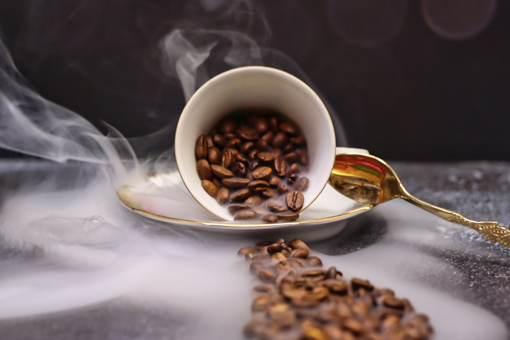

O melhor Café do Brasil
Grão selecionados, torra artesanal e sabor incomparável direto da fazenda para sua xícara
Grãos selecionados das melhores regiões
Pequenos lotes para máxima qualidade
Para compras acima de R$ 100
Paixão em cada detalhe

Grãos selecionados com torra escura, proporcionando um sabor inteso e marcante. Ideal para quem aprecia um...
Minas Ferais, Brasil
Grãos selecionados com torra escura, proporcionando um sabor inteso e marcante. Ideal para quem aprecia um...
Grãos selecionados com torra escura, proporcionando um sabor inteso e marcante. Ideal para quem aprecia um...
Grãos selecionados com torra escura, proporcionando um sabor inteso e marcante. Ideal para quem aprecia um...
Grãos selecionados com torra escura, proporcionando um sabor inteso e marcante. Ideal para quem aprecia um...
Grãos selecionados com torra escura, proporcionando um sabor inteso e marcante. Ideal para quem aprecia um...
Há mais de 30 anos, cultivamos e torramos os melhores grãos de café do Brasil. Nossa paixão é proporcionar momentos especiais através de cafés excepcionais.
Cada grão é cuidadosamente selecionado e torrado artesanalmente para garantir o sabor e aroma perfeitos. Do pé à xícara, nosso compromisso é com a excelência.